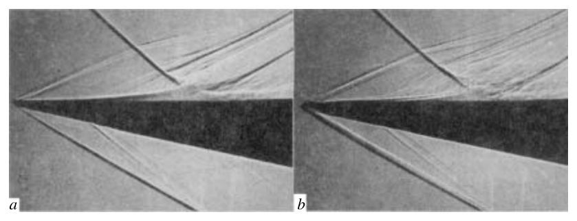
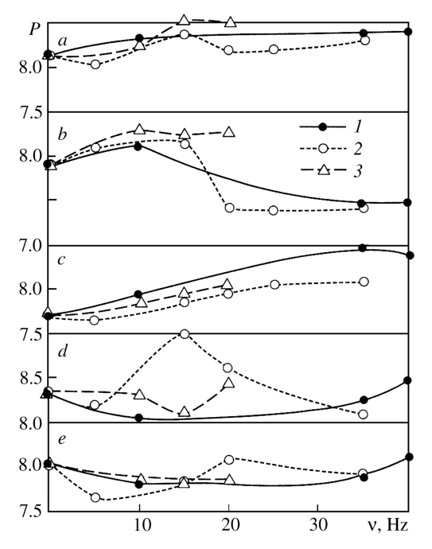
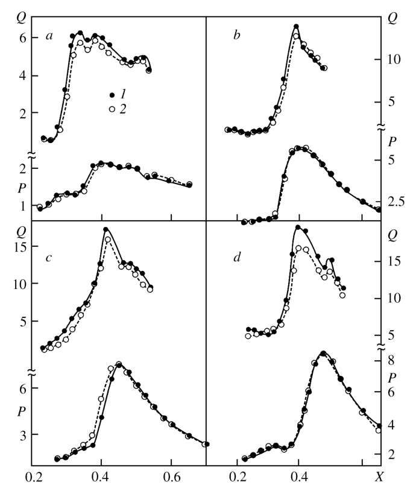
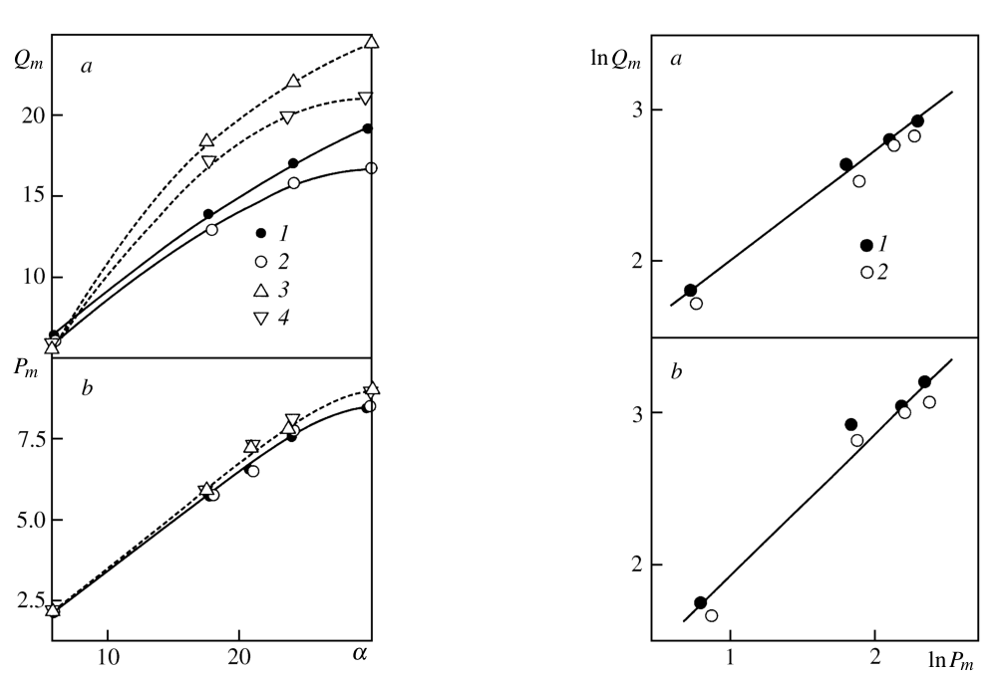

01中文摘要
研究流向振荡激波与平板边界层干扰区的流动特征，覆盖层流、转捩和湍流三种流态。通过改变振荡激波的强度、频率和振幅，分析干扰区的流型以及压力和热流分布，并与定常激波干扰结果进行比较。实验在M∞=3风洞中进行，采用压力测点、量热式热流传感器和Toepler纹影；激波由可沿流向振动的平板产生，迎角取6°、18°、24°和30°，频率0–40 Hz、振幅0–9.5 mm。结果表明振荡激波对压力分布影响较小，却显著改变再附区热流，并增大分离区尺度。
原始摘要（英文/原文）
The distinctive features of the flow in the region of interaction between an oscillating shock and a flat-plate boundary layer are studied for the laminar, transitional, and turbulent flow regimes. The flow patterns and the pressure and heat transfer distributions in the interaction region are analyzed at different intensities, frequencies, and amplitudes of the oscillating shock. The results of the interaction of oscillating and steady shocks with the flat-plate boundary layer are compared.
02阅读说明
bundle 共 441 行，已一次性完整读取至文件末尾；公式 (1)(2) 与平台压力式因文本层乱码，核对原 PDF 第 2、8 页（共 2 页）；图 5、图 7 已抽查。全部内容仅取自 bundle 的正文、图注与表格，未引入外部文献知识。原文为俄文期刊英译本，个别排版（如平板“150 mm-thick”）存在疑点，已在 conditions 中注明。 文章类型：期刊
03一句话核心与三句话摘要
M=3 平板实验表明：振荡激波主要改变再附区热流而非时均压力，转捩区对频率最敏感。
- 在 M∞=3 的加热风洞中，用可流向振动的激波发生器研究了层流、转捩和湍流平板边界层在定常与振荡激波下的干扰流场。 原文明确
- 振荡与定常激波的时均压力分布几乎重合，但再附区热流明显不同，α=30° 时最大热流 Qm 降低约 17%，且激波越强差异越大。 原文明确
- 转捩雷诺数区对振荡频率和幅值最敏感，可出现过 0.75–0.85 的压力跃变和 +12% 的热流突增，作者将其归因于外强迫与分离区自然振荡的共振。 AI概括
04核心内容清单
| 要点 | 类型 | 重要性 | 原文依据 | 属性 |
|---|---|---|---|---|
| 实验覆盖层流（Re=6×10^5）、转捩（0.98–2.67×10^6 共 6 个工况）和湍流（2.35×10^6）三类边界层，M∞=3，α=6°/18°/24°/30°，ν=0–40 Hz，a=0–9.5 mm。 | 实验条件 | A | 第 1–2 页（p.485–486），表 1 工况表 | 原文明确 |
| 定常激波干扰区由入射激波、分离诱导激波、分离区内激波和再附区激波组成；最大压力位于再附点附近，最大热流位于分离区内部，与 [13] 的渐近理论一致。 | 流动机理 | A | 第 3–4 页（p.487–488），图 5；第 8 页（p.492） | 原文明确 |
| 层流与湍流工况下，振荡激波引起的再附点最大压力变化不超过 0.5（层流相对定常约 4.5%），说明时均压力对激波振荡不敏感。 | 主要结果 | A | 第 4 页（p.488），图 7a、7e；第 8 页（p.492） | 原文明确 |
| 转捩工况再附点压力对振荡敏感：Re=1.26/1.34/1.48×10^6 时 P 的波动幅度分别达 0.9、0.8、0.95，远大于层流/湍流。 | 主要结果 | A | 第 4 页（p.488），图 7b–d | 原文明确 |
| 转捩区压力随频率非单调变化：A=0.029 时 15→20 Hz 使 P 下降 0.75（图 7b 曲线 2），5→15 Hz 使 P 上升 0.85（图 7d 曲线 2）。 | 主要结果 | A | 第 4 页（p.488），图 7b、7d | 原文明确 |
| Re=0.98×10^6 时振荡与定常热流差不超过 ±3%；Re=2.11×10^6、小振幅时 Q 增大约 9.5%，大振幅 A=0.1、ν=15 Hz 时突增 12%，20 Hz 回落。 | 主要结果 | A | 第 6 页（p.490），图 9、图 10 | 原文明确 |
| 大振幅（ν=10 Hz、a=9.5 mm）下，层流与湍流工况的压力沿程分布几乎重合，而热流分布明显分离；α=30° 时非定常 Qm 比定常低 17%。 | 主要结果 | A | 第 8 页（p.492），图 11、图 12；第 9 页（p.493） | 原文明确 |
| 非定常分离区高度比定常增大 11–16%（Re=6×10^5、α=24°），分离泡增厚导致区内热流降低。 | 机理证据 | B | 第 9 页（p.493） | 原文明确 |
| 热流峰值 Qm 与压力峰值 Pm 的对数呈线性，层流斜率 K=0.85、湍流 K=1.2，与 [15] 的激波干扰加热结果一致。 | 标度关系 | A | 第 9 页（p.493），图 14 | 原文明确 |
| 转捩区热流/压力的非单调频响可归因于外强迫振荡与分离区自然振荡的共振；但文中用 apparently 表述，未给出共振频率的系统测量。 | 机理解释 | B | 第 5 页（p.489）；第 6 页（p.490）；第 10 页（p.494） | AI概括 |
| 近临界 Re 下定常激波即可使分离区在长泡（层流型）与短泡（湍流型）之间交替，呈自激振荡（α=30°、Re=1.2×10^6，图 6）。 | 流动现象 | B | 第 3–4 页（p.487–488），图 6 | 原文明确 |
| Sh=0.001 很小，但热流仍发生显著重分布，说明准定常假设不能直接用于热流峰值预估；压力则可用准定常时均值近似。 | 推论 | C | 第 9 页（p.493）；第 8 页（p.492） | AI推断 |
05引言：研究问题与领域缺口
指出飞行器操纵面、天线、超结构等会产生振荡激波，其与边界层干扰的频率、幅值和强度均可变；已有 [1–7] 主要研究定常激波干扰的分离条件、流场结构与压力/热流分布，[8] 讨论大振幅扰动对转捩的影响，但缺乏覆盖层流—转捩—湍流的振荡激波系统实验。本文目标是获得不同强度、频率、幅值下干扰区的流型与压力、热流分布，并与定常激波对比（第 1 页，p.485）。
06流动条件与几何构型
| 项目 | 数值/描述 | 依据 | 备注 |
|---|---|---|---|
| 来流马赫数 | M∞ = 3 | 第 1 页（p.485） | 风洞为轴对称试验段并加热气流 |
| 平板模型 | 200 mm 长；原文作“150 mm-thick” | 第 1 页（p.485） | “thick”疑为宽度 150 mm 的笔误，受限于材料无法确认 |
| 激波发生器 | 80 mm 厚、100 mm 长平板，安装于振动器，可平行来流振荡 | 第 1 页（p.485） | |
| 激波入射角 | α = 6°、18°、24°、30° | 第 1 页（p.485） | |
| 振荡频率与幅值 | ν = 0–40 Hz；a = 0–9.5 mm；A = a/x0，x0 = 70 mm | 第 1 页（p.485）；第 3–4 页（p.487–488） | |
| 层流工况 | p0 = 2.55×10^5 N/m²，T0 = 473 K，Re = 6×10^5，qav = 3.57 W/cm² | 第 2 页（p.486） | Re 以来流参数和 x0 为参考长度 |
| 湍流工况 | p0 = 5×10^5 N/m²，T0 = 393 K，Re = 2.35×10^6，qav = 2.06 W/cm² | 第 2 页（p.486） | 平板上 X<0.43 层流、0.43≤X≤0.47 转捩、X>0.47 湍流 |
| 转捩工况 1 | T0 = 353 K，p0 = 2.29×10^5 N/m²，Re = 0.98×10^6，qav = 0.145 W/cm² | 第 2 页（p.486） | |
| 转捩工况 2 | T0 = 353 K，p0 = 2.94×10^5 N/m²，Re = 1.26×10^6，qav = 0.184 W/cm² | 第 2 页（p.486） | |
| 转捩工况 3 | T0 = 353 K，p0 = 3.11×10^5 N/m²，Re = 1.34×10^6，qav = 0.192 W/cm² | 第 2 页（p.486） | |
| 转捩工况 4 | T0 = 353 K，p0 = 3.43×10^5 N/m²，Re = 1.48×10^6，qav = 0.205 W/cm² | 第 2 页（p.486） | |
| 转捩工况 5 | T0 = 353 K，p0 = 4.91×10^5 N/m²，Re = 2.11×10^6，qav = 0.245 W/cm² | 第 2 页（p.486） | 对称轴上层流至 X=0.32，0.32<X<0.46 转捩，X>0.46 湍流 |
| 转捩工况 6 | T0 = 353 K，p0 = 6.21×10^5 N/m²，Re = 2.67×10^6，qav = 0.299 W/cm² | 第 2 页（p.486） | |
| 大振幅定常/振荡对比工况 | ν = 10 Hz、a = 9.5 mm；A = 0.14（Re=6×10^5）、A = 0.12（Re=2.35×10^6） | 第 7–8 页（p.491–492），图 11、图 12 图注 | |
| 测量方式 | 沿对称轴布置压力孔与量热式热流传感器；Toepler 阴影/纹影显示流场 | 第 1 页（p.485） | 未给出传感器时间响应与不确定度 |
| 热流归一化基准 | qav 为 0.235≤x≤0.335 范围内 6 个测点的平均值 | 第 2 页（p.486） |
07核心现象与关键参数
| 参数 | 定义 | 数值 | 关系/说明 | 依据 |
|---|---|---|---|---|
| M∞ | 来流马赫数 | 3 | 第 1 页（p.485） | |
| Re | 以来流参数与 x0 为参考长度的雷诺数 | 6×10^5（层流）；2.35×10^6（湍流）；0.98–2.67×10^6（转捩 6 工况） | Re = ρ∞U∞x0/μ∞（文中仅说明参考长度，未给公式） | 第 2 页（p.486） |
| x0 | 平板前缘到激波入射点的距离 | 70 mm | 第 3–4 页（p.487–488） | |
| A | 无量纲振荡幅值 | 0.014、0.029、0.1（图 7–10）；0.14、0.12（图 11、12） | A = a/x0 | 第 3 页（p.487）；第 7 页（p.491）；图 7、图 11 图注 |
| X | 无量纲流向坐标 | 0–1 | X = x/L，L 为平板长度 | 第 2 页（p.486） |
| Q | 无量纲热流 | 实测范围未给单一值 | Q = q/qav | 第 2 页（p.486） |
| P | 无量纲压力 | 实测范围未给单一值 | P = p/p∞ | 第 2 页（p.486） |
| Sh | 斯特劳哈尔数 | 0.001 | 第 9 页（p.493） | |
| K | ln Qm 对 ln Pm 的直线斜率 | 0.85（层流分离）；1.2（湍流分离） | ln Qm = K ln Pm + C | 第 9 页（p.493），图 14 |
| 层流分离临界角 | 由式 (1) 判据得到的分离起始 α | α = 3°（X = 0.35） | 第 2 页（p.486） | |
| 湍流分离临界角 | 由式 (2) 判据得到的分离起始 α | α = 11°（X = 0.4） | 第 2 页（p.486） | |
| Qm 降幅 | 振荡相对定常的最大热流差 | α=30° 时约 17%（两种 Re） | 第 9 页（p.493） | |
| 分离区高度增幅 | 非定常相对定常的分离区高度 | 11–16%（Re=6×10^5、α=24°） | 第 9 页（p.493） |
08方法与数据
风洞为轴对称试验段、气流加热，M∞=3；平板 200 mm 长，平板模型上沿对称轴布置压力孔与量热传感器；80 mm 厚、100 mm 长的激波发生器平板固定在振动器上，可平行来流振荡，α=6°、18°、24°、30°，ν=0–40 Hz，a=0–9.5 mm；用 Toepler 仪显示流场。层流工况 Re=6×10^5、p0=2.55×10^5 N/m²、T0=473 K、qav=3.57 W/cm²；湍流工况 Re=2.35×10^6、p0=5×10^5 N/m²、T0=393 K、qav=2.06 W/cm²；转捩研究另用 T0=353 K 的 6 个工况（第 1–2 页，p.485–486）。数据以 X=x/L、Q=q/qav、P=p/p∞ 无量纲化，qav 取 0.235≤x≤0.335 六个测点的平均值，Re 以 x0=70 mm 为参考长度（第 2 页，p.486；第 3 页，p.487）。
| 项目 | 内容 | 依据 | 备注 |
|---|---|---|---|
| 实验设备 | 轴对称试验段、气流加热的超声速风洞，M∞=3 | 第 1 页（p.485） | |
| 模型与振动 | 200 mm 长平板；80 mm×100 mm 激波发生器平板固定于振动器，平行来流正弦振荡 | 第 1 页（p.485） | |
| 参数扫描 | α=6°/18°/24°/30°；ν=0–40 Hz；a=0–9.5 mm；6 个转捩 Re 工况 | 第 1–2 页（p.485–486） | |
| 压力与热流测量 | 平板对称轴上的压力孔与量热式热流传感器，给出时均值 | 第 1 页（p.485）；第 8 页（p.492） | 未说明采样率、相位平均或误差 |
| 流场显示 | Toepler 仪（阴影/纹影）拍摄定常激波干扰流场 | 第 1 页（p.485）；图 4、图 6（p.488） | |
| 边界层状态标定 | 用无干扰平板的热流分布（图 3）判定层流/转捩/湍流区间；压力分布无法区分状态 | 第 2–3 页（p.486–487），图 2、图 3 | |
| 分离判据 | 引用式 (1)（层流）与式 (2)（湍流）估算分离起始激波强度 | 第 2 页（p.486），式 (1)(2) | |
| 数据无量纲化 | X=x/L、Q=q/qav、P=p/p∞；qav 为 0.235≤x≤0.335 六点平均 | 第 2 页（p.486） | |
| 定常/振荡对比 | 固定 α 与 Re，比较 ν=0 与 ν=10 Hz、a=9.5 mm 的时均 Q(x)、P(x)；并比较不同 ν、A 下的峰值 Qm、Pm | 第 7–9 页（p.491–493），图 11–14 | |
| 平台压力核对 | 将 α=30° 湍流工况实测平台压力与 Abramovich 公式计算值对比 | 第 8 页（p.492） | |
| 不确定度分析 | 文中未提及 | 全文 |
09核心推导与公式
原文未给出从守恒律出发的完整解析推导；以下仅列出材料中可核对的定义或建模链，不补写教科书推导。
原文没有对振荡激波/边界层干扰作理论推导；仅引用两个半经验分离判据和一个经验平台压力公式，用于判断分离起始与核对压力平台。以下 steps 记录这些被引用的关系及其在文中的位置，不代表本文给出了推导。
关键假设
- 分离判据 (1)(2) 为定常、二维、准局部半经验关系，直接引用自 [9,10]。
- Re 以来流参数和平板前缘到入射点的距离 x0 为参考长度。
- 平台压力公式引用 Abramovich 的经典关系 [14]，假定平台区压力近似均匀。
- 上述关系用于 M∞=3 的定常分离判断；振荡效应完全由实验测量，不含在公式中。
推导过程
将流向坐标、热流和压力分别用平板长度、平均热流和来流静压归一化，作为全文对比基准。
以分离诱导激波后的压力增量与来流动压之比关联 M∞ 和 Re，用于估计层流边界层的分离起始。
以只含 M∞ 的函数形式给出湍流边界层分离所需的压力增量，用于判断湍流工况的分离起始。
用 Abramovich 的经验式估算分离平台区压力，并与 α=30° 湍流工况实测值对比；文中称符合良好。
适用边界：判据为定常半经验关系，不能描述振荡引起的非定常分离、共振或热流峰值变化；未给出推导过程、系数来源或适用 Re/M 范围；平台压力公式只在单个工况核对，不能视为对全文数据的验证。
10结果：主要发现与关键证据
定常激波下给出含分离激波、分离区内激波和再附区激波的流型（图 5）；最大压力在再附点附近、最大热流在分离区内（第 8 页，p.492）。再附点压力 P 在层流与湍流工况的振荡—定常差不超过 0.5（层流约 4.5%），而转捩工况可达 0.9、0.8、0.95（图 7b–d，第 4 页，p.488）；频率 15→20 Hz 时 P 降 0.75（图 7b 曲线 2），5→15 Hz 时升 0.85（图 7d 曲线 2）。热流方面，Re=0.98×10^6 时振荡与定常差不超过 ±3%（图 9a）；Re=2.11×10^6、小振幅 A=0.014/0.029 时 Q 增大约 9.5%（图 9b）；A=0.1 时 Q 到 10 Hz 基本不变，15 Hz 突增 12%，20 Hz 又回落（图 10，第 6 页，p.490）。大振幅对比（ν=10 Hz、a=9.5 mm、A=0.14/0.12）显示压力分布几乎重合、热流曲线分离，α=30° 时 Qm 低 17%（图 11、12，第 8 页，p.492；第 9 页，p.493）。分离区高度在非定常情形增大 11–16%（Re=6×10^5、α=24°），ln Qm–ln Pm 呈线性，层流斜率 K=0.85、湍流 K=1.2（图 14，第 9 页，p.493）。
| 发现 | 证据 | 证据类型 | 强度 | 位置 | 属性 |
|---|---|---|---|---|---|
| 层流与湍流工况下，振荡激波对再附点时均压力的影响很小：最大—最小 P 差不超过 0.5，层流相对定常约 4.5%。 | 图 7a、7e 与正文给出的 0.5 与 4.5% 数值。 | 实验结果 | 强 | 第 4 页（p.488）；第 8 页（p.492） | 原文明确 |
| 转捩工况再附点压力对振荡高度敏感，P 的波动幅度达 0.9（Re=1.26×10^6）、0.8（1.34×10^6）、0.95（1.48×10^6）。 | 图 7b–d 三条幅值曲线与正文数值。 | 实验结果 | 强 | 第 4 页（p.488），图 7 | 原文明确 |
| 转捩区压力随频率非单调跃变：15→20 Hz 时 P 降低 0.75，5→15 Hz 时升高 0.85（A=0.029）。 | 图 7b 曲线 2 与图 7d 曲线 2 的逐点比较。 | 实验结果 | 强 | 第 4 页（p.488），图 7b、7d | 原文明确 |
| 热流响应依赖 Re 与幅值：Re=0.98×10^6 时差不超过 ±3%；Re=2.11×10^6、A=0.014/0.029 时 Q 高约 9.5%；A=0.1 时 10 Hz 前不变、15 Hz 突增 12%、20 Hz 回落。 | 图 9a、9b 与图 10 的 Q(ν) 曲线及正文百分比。 | 实验结果 | 强 | 第 6 页（p.490），图 9、图 10 | 原文明确 |
| 大振幅振荡下，压力沿程分布与定常几乎重合，热流分布显著不同；α=30° 时非定常 Qm 比定常低 17%（层流与湍流均是）。 | 图 11d、12d 的曲线 1/2 对比及正文 17% 数值。 | 实验结果 | 强 | 第 8 页（p.492），图 11、图 12；第 9 页（p.493） | 原文明确 |
| 非定常分离区高度比定常大 11–16%（Re=6×10^5、α=24°），与区内热流降低一致。 | 分离区高度测量值；作者将其与热流下降建立因果联系。 | 测量与解释 | 中 | 第 9 页（p.493） | 原文明确 |
| 热流峰值与压力峰值满足对数线性关系，层流斜率 0.85、湍流 1.2，与 [15] 一致。 | 图 14 的 ln Qm–ln Pm 直线拟合。 | 标度关系 | 强 | 第 9 页（p.493），图 14 | 原文明确 |
| 近临界 Re 下定常激波即可诱发分离区长泡/短泡交替的自振荡，说明转捩区本身具有固有非定常性。 | α=30°、Re=1.2×10^6 的 Toepler 照片（图 6a 长泡、6b 短泡）。 | 流动显示 | 中 | 第 3–4 页（p.487–488），图 6 | 原文明确 |
| 作者把转捩区的非单调频响归因于外强迫与分离区自然振荡的共振，并据此解释 15 Hz 的 +12% 热流突增。 | 文中以 apparently、can be attributed to the resonance 表述，无独立共振测量。 | 机理推断 | 弱 | 第 5 页（p.489）；第 6 页（p.490） | AI概括 |
| 平台压力经验公式在 α=30° 湍流工况与实测符合良好。 | 图 12d 中计算平台压力线与实测压力分布的比较。 | 验证 | 中 | 第 8 页（p.492） | 原文明确 |
11机制解释与论证链
定常干扰区由入射激波、分离诱导激波、分离区内激波和再附区激波构成（图 5）。最大压力出现在再附点附近，最大热流出现在分离区内部；再附点下游还出现局部热流峰值，作者归因于气体由对称轴向侧缘铺展。振荡激波使分离泡沿流向伸缩：时均压力因压缩与膨胀在时间上相互抵消而近似不变；热流峰值则因峰值“抹平”和横向扰动造成的区内重分布而下降。非定常分离区高度增大 11–16%，使区内热流进一步降低。转捩区分离泡对强迫频率敏感，外强迫与分离区自然振荡叠加可产生共振，促进或延迟转捩，导致 P、Q 的非单调频响。湍流边界层整体超临界，但分离区内部分流动变为亚临界，可把振荡扰动传向上下游。
12讨论：结论、贡献与局限
作者认为时均压力近似不变是因为振荡使上下游压缩/膨胀在时间平均中相互抵消；热流下降来自峰值“抹平”、横向扰动造成的区内热流重分布以及分离泡增厚。湍流边界层整体超临界、不能向上游传递扰动，但分离区内部分边界层变为亚临界，可传递振荡激波扰动。转捩区压力对频率的非单调响应被解释为外强迫与分离区自然振荡叠加的共振；近临界 Re 下定常激波即可引起分离区层流/湍流交替的自振荡（第 3 页，p.487；第 9 页，p.493）。作者也指出结果均为时均值、Sh=0.001，且只测了有限频点和单一 M∞（第 10 页，p.494）。
作者结论
在 M∞=3 下，振荡激波与平板边界层的时均压力场与定常激波几乎一致，但再附区热流明显降低，且激波越强降低越多（α=30° 时 Qm 约低 17%）。转捩雷诺数区对频率和幅值最敏感，可出现 0.75–0.85 的压力跃变与 +12% 的热流突增，作者归因于共振；层流区热流变化仅 ±3%。近临界 Re 下，即使定常激波也会引起分离区层流/湍流交替的自振荡。总体结论是：评估振荡激波干扰时不能只看时均压力，必须同时测量热流；转捩区尤其要警惕频率共振。
主要贡献
- 给出了 M∞=3 下覆盖层流、转捩、湍流三种状态的振荡激波/平板边界层干扰实验数据集。
- 定量证明时均压力对激波振荡不敏感、而再附区热流可下降约 17%，二者不能互相替代。
- 识别出转捩雷诺数区对振荡频率与幅值的强敏感性及可能的共振响应。
- 给出 ln Qm–ln Pm 的线性关系（层流 K=0.85、湍流 K=1.2），可用于热流峰值关联。
局限与未解决问题
（1）只测时均量，没有相位平均、瞬态脉动或分离点/再附点的时间序列，无法直接证明“峰值抹平”和“横向重分布”的机理。（2）Sh=0.001，ν 仅 0–40 Hz、a 仅 0–9.5 mm，且只有 M∞=3 一个马赫数，频率共振结论基于少数频点。（3）压力孔与量热计的空间分辨率有限，分离区高度 11–16% 的测量方法未说明。（4）文中未给出任何测量不确定度，±3% 与 9.5%、12%、17% 的统计显著性无法判断。（5）平台压力公式仅在一个湍流工况核对，不能代表全部工况。（6）平板存在侧缘三维流动，中心线测量受其影响但未定量。（7）转捩区自振荡频率、共振频率随 Re、α、A 的变化规律未给出。
13对高速流动与工程的意义
该实验为超声速/高超声速飞行器上由操纵面、天线等引起的振荡激波干扰提供了少见的跨层流—转捩—湍流实验基准。其核心工程含义是：仅凭时均压力不足以评估热载荷，振荡可使再附区热流峰值降低约 17%，而转捩区则可能因频率共振出现 +12% 的热流突增；因此热防护设计需同时考虑层流/湍流状态与激波运动频率。ln Qm–ln Pm 关系也为工程热流预估提供了简单关联。
14核心图件




15可引用原文素材
| 原文短句 | 可支持的观点 | 位置 | 使用建议 |
|---|---|---|---|
| “the difference in the pressure for the oscillating and steady shocks was not more than 4.5%” | 层流工况时均压力对振荡不敏感 | 第 4 页（p.488） | 支撑 core_point 3 与 finding 1 |
| “the value of P decreases by 0.75” | 转捩区 15→20 Hz 的压力跃变 | 第 4 页（p.488），对应图 7b 曲线 2 | 支撑 finding 3 |
| “resonance favors turbulent transition in the separated boundary layer reattachment zone” | 共振促进再附区转捩的解释 | 第 6 页（p.490） | 支撑机制与 finding 9 |
| “in the unsteady case the height is 11 to 16% greater” | 非定常分离区增厚 | 第 9 页（p.493） | 支撑 finding 6 |
| “the value of Qm in the unsteady interaction region is 17% less” | 振荡激波使最大热流降低 17% | 第 9 页（p.493），α=30° | 支撑核心结论 |
| “the slope of the straight line is K = 0.85” | 层流 ln Qm–ln Pm 斜率 | 第 9 页（p.493），图 14a | 支撑 finding 7 |
| “The calculated values are in good agreement with the measured data.” | 平台压力公式在 α=30° 湍流工况的验证 | 第 8 页（p.492） | 支撑 finding 10 |
16最终核验
| 核验项 | 结论 |
|---|---|
| 仅基于全文 | 是。全部要点、数据与引文取自 bundle 的带页码正文、图注和工况表；未使用外部文献或教科书知识。 |
| A 级要点有依据 | 是。A 级要点均给出页码、图号或公式位置：如 p.486 式 (1)(2)、p.488 图 7、p.490 图 9/10、p.492–493 图 11–14。 |
| 属性标注 | 是。three_sentence、core_points、findings 均带 attr；共振解释、【AI推断】的准定常适用性均单独标注。 |
| 覆盖范围 | bundle 441 行全文读完；原 PDF 核对第 2、8 页（公式 (1)(2) 与平台压力式），抽查图 5、图 7。 |
| 无编造 | 是。图号、页码、公式编号与数据均来自 bundle；无法确认处写“文中未提及”或“受限于材料，无法确认”（如平板厚度、Sh 定义、不确定度）。 |
需回原文确认
- 压力孔与量热传感器的时间响应、采样率及是否做过相位平均均未说明，时均结论能否代表周期内极值？
- 文中未给热流测量不确定度，±3%、9.5%、12%、17% 是否超出实验误差？
- 共振频率是否随 Re、α、A 系统变化？文中只给出 15、20 Hz 等个别频点。
- 分离区高度 11–16% 的测量方法与误差未交代，能否独立复现？
- Sh=0.001 时为何热流仍显著重分布？需要瞬态热流或相位锁定测量验证“峰值抹平”机理。
- 平板侧缘三维流动对中心线 Q、P 的影响有多大？文中未做展向测量。
- 平台压力公式只在 α=30° 湍流一个工况核对，其他 α、Re 下是否同样适用？
- 转捩区“层流/湍流交替”自振荡的频率与幅值未给出，其与强迫频率的关系不明。
17关联文献
依据标签、板块、构型与作者脉络自动关联，可据此追踪同一问题的前序与后续工作。
18引用格式
选择期刊风格后复制；出处保留原刊名。BibTeX 可直接用于 LaTeX。
引用格式
Pilyugin, N. N. & Khlebnikov, V. S. 2004 Study of the Interaction of a Streamwise-Oscillating Shock with the Boundary Layer on a Flat Plate. Fluid Dynamics 39 (3), 485–494. https://doi.org/10.1023/B:FLUI.0000038567.54882.7a
PDF上传 PDF 并更新本页
本页缺少全文、摘要或图件时，可在浏览器本地补入 PDF。解析完全在本机完成，不上传网络；完成后会更新本页的 PDF 打开链接、原摘要、IMRaD 机器抽取、关键句与含图页面。复杂的公式语义与中文深度解读仍以原文和既有精读记录为准。